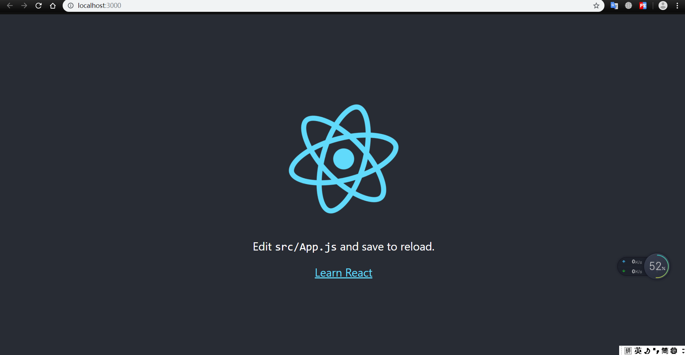

visual studio code
开发环境需要安装nodejs和npm，nodejs工具包含了npm。
nodejs下载官网：https://nodejs.org/zh-cn/download/。
测试开发环境是否准备完成：使用管理用身份打开命令行窗口，输入：node -v和npm -v。
create-react-app生成器在命令行窗口输入：npm install -g create-react-app
图片是我本地已经安装过执行的更新。
找一个文件夹存放react项目，执行创建react项目命令：create-react-app react-app ,create-react-app是创建命令，react-app是项目名称。
1、转到项目目录：cd react-app
2、运行项目：npm start
